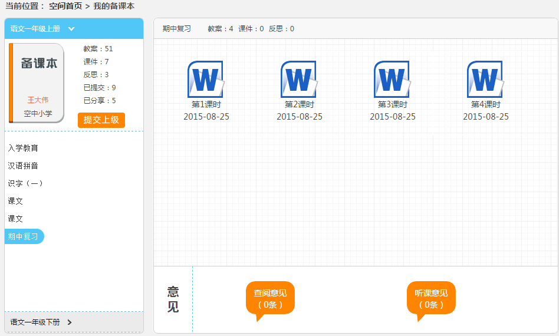
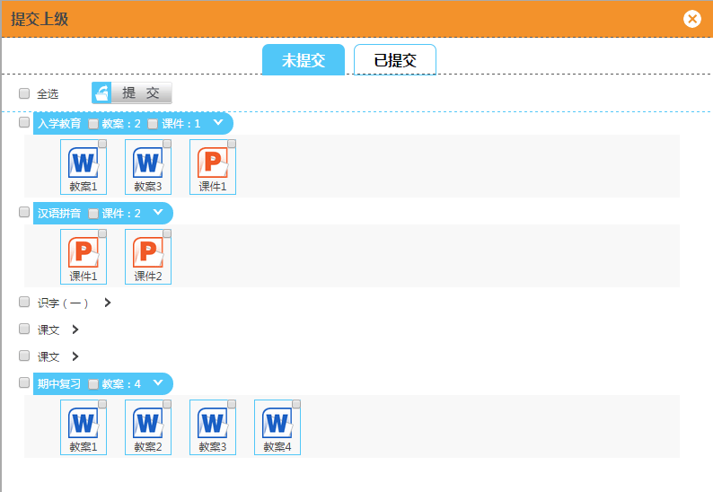
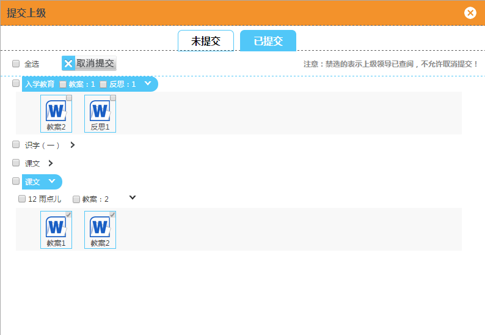
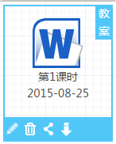
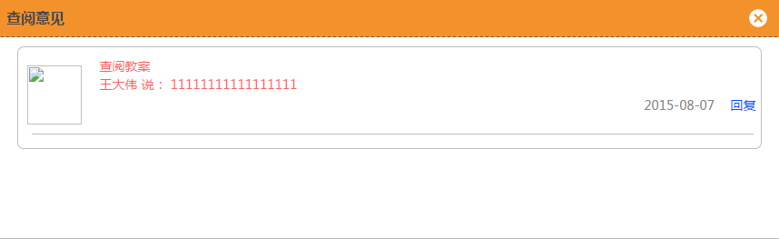

2.2.2 我的备课本
教师用户可以在备课本中查看自己的备课资源，包括教案、课件和反思（如图3.2.2-1），同时可以将这些资源进行提交给上级和分享给自己同伴的操作，同时在此看到他们对此资源的查阅意见和评论内容。
1、提交/取消提交：
（1）提交：用户可将教案、课件、反思提交给上级进行查阅。点击“提交上级”，选择要提交的备课资源，点击“提交”，可以完成提交给上级的操作（如图3.2.2-2）。
（2）取消提交：用户选择性的取消提交教案、课件、反思。点击“提交上级”按钮，在“已提交”的备课资源中选择想要取消提交的教案、课件和反思，点击“取消提交”可以完成取消提交给上级的操作（如图3.2.2-3）。
注意：若备课资源已被领导查阅，则不允许取消提交。
2、操作：
用户可以对备课资源进行修改、删除、分享（/取消分享）、下载的操作（如图3.2.2-4）。
3、查看：
用户可以对已提交、已分享的备课资源进行查看查阅意见、评论意见（如图3.2.2-5）。
